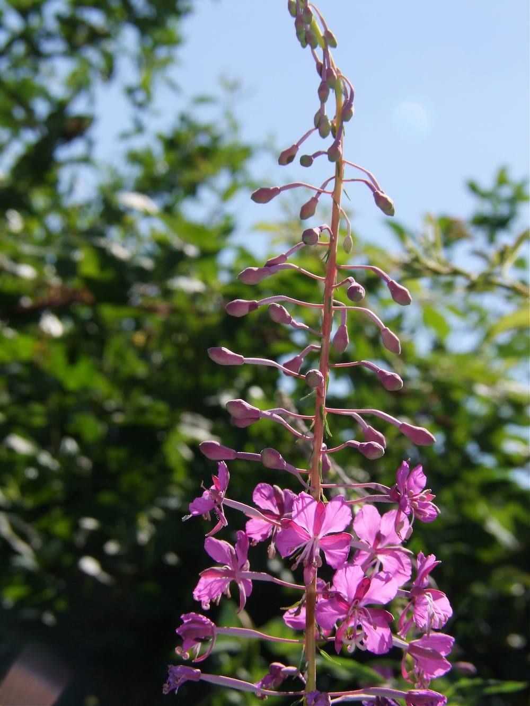

Brandfolge-Spezialistin
Das Schmalblättrige Weidenröschen ist eine der ersten Pflanzen, die nach Waldbränden oder Kahlschlägen auftauchen — daher der englische Name „fireweed“. Die winzigen, mit Flughaaren versehenen Samen werden vom Wind kilometerweit getragen und keimen besonders gut auf nackter, mineralreicher Erde. Innerhalb weniger Jahre nach einem Brand bilden ganze Bestände rosa Blütenmeere — ein faszinierendes Bild der ökologischen Erholung.
Geschmack auf der Tundra
In Nordeuropa und Sibirien ist das Weidenröschen viel mehr als nur eine wilde Pflanze: Die jungen Triebe schmecken spargelartig, die Blüten werden zu Tee verarbeitet („Ivan-Tschai“ in Russland), und die Wurzeln waren in Hungerjahren Notnahrung. In Mitteleuropa hat es diese kulinarische Tradition kaum gegeben — schade, denn die Pflanze ist absolut essbar und vielseitig.